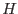
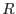

XMM-Newton Science Analysis System
emtaglenoise (emtaglenoise-1.1) [xmmsas_20170112_1337-16.0.0]
Algorithm
- Open the input DataSet, determine if it comes from MOS1 or MOS2,
check input errors, initalise counters, and etc.
- Read the EVENTS table extension.
- Check if each event:
- lies outside the field of view
(as defined in Kuntz and Snowden, 2008 [1], Table 3), and
- falls within:
- the 2.5- 5.0keV `hard' band,
- the 0.4- 0.8keV `soft' band, and/or
- the 0.3-10.0keV count-rate band.
- For each event that satisfies the conditions above,
increment by one the corresponding event counter(s)
for the corresponding CCD.
- For each CCD nn,
- Read the STDGTInn table extension.
- Calculate the sum of all GTIs.
- Calculate the hardness ratio  as the ratio
of the hard- to soft-band event counts.
- Calculate the event rate  from the event-rate band counter
and the GTI sum.
- Test if the values of and meet the anomalous criteria
as stated in Kuntz and Snowden, 2008 [1], Table 1.
- If the CCD is in an anomalous state,
set the corresponding bit of the anomalous bit flag.
- Write the keywords LENOISnn, nn=02-07,
to the header of the input DataSet.
- If parameter filterbadccds is set, call evselect
to filter the input
Dataset and write the output to the file specified by filteredset.
XMM-Newton SOC/SSC -- 2017-01-12